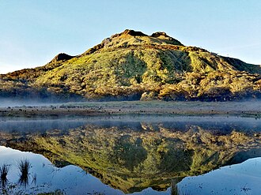
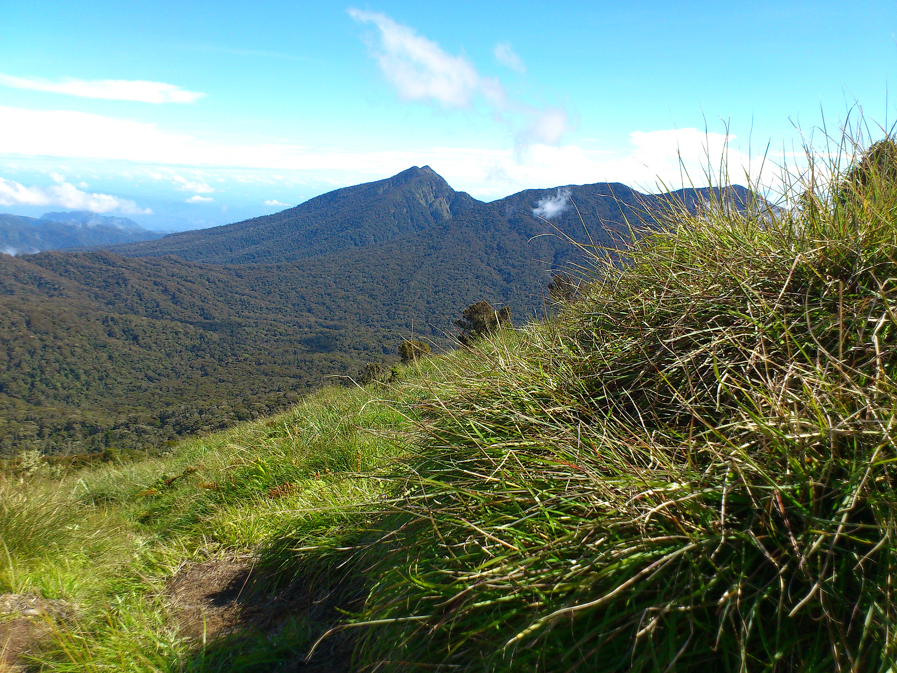
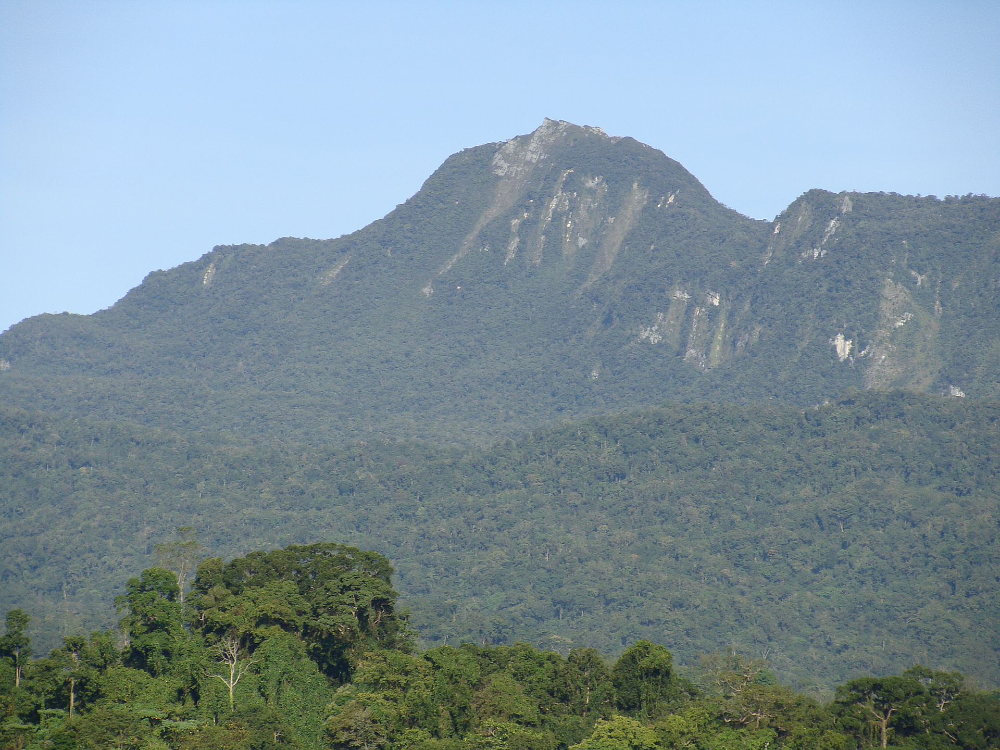

Mountains in Davao Province
Davao, a region renowned for its natural splendor, is home to a majestic mountain landscape, prominently featuring the towering Mount Apo, the highest peak in the Philippines. This dormant volcano, an ASEAN Heritage Park, serves as a vital ecological sanctuary and a challenging destination for mountaineers. Alongside Apo, the region boasts other significant peaks like Mount Talomo, another dormant volcano that acts as a guardian to Mount Apo, and Mount Kampalili in Davao de Oro, recognized for its critical biodiversity. These mountains, with their lush forests, diverse wildlife, and challenging terrains, form a crucial part of Davao's identity, offering both adventure and ecological significance to the area.

Mount Apo
Mount Apo is the highest mountain peak in the Philippines, with an elevation of 2,954 meters (9,692 ft) above sea level. A large solfataric, dormant stratovolcano, it is part of the Apo-Talomo Mountain Range of Mindanao island. Apo is situated on the tripartite border of Davao City, Davao del Sur, and Cotabato; its peak is visible from Davao City 45 kilometers (28 mi) to the northeast, Digos 25 kilometers (16 mi) to the southeast, and Bansalan 20 kilometers (12 mi) to the west. Apo is a protected area and is the centerpiece of Mount Apo Natural Park.

Mount Talomo
Mount Talomo, a majestic dormant volcano, stands as the sentinel of the revered Mount Apo, the highest peak in the Philippines. With an impressive elevation of 2,674 meters (8,773 feet), Mount Talomo ranks among the top 15 highest mountains in the country. It is strategically located within the Apo–Talomo Mountain Range, straddling the provinces of Davao del Sur and Cotabato. Nestled at the foot of the grand Mount Apo, it is an integral part of the Mount Apo Natural Park, a protected area recognized as an ASEAN Heritage Park for its significant biodiversity and ecological importance. The mountain's presence adds to the grandeur and ecological richness of this protected region.

Mount Kampalili
Mount Kampalili, a significant geographical feature situated in Pantukan, Davao de Oro, Philippines, is identified by its coordinates 7.3102778, 126.2805556. This mountain is also recognized by the alternative name Mount Kampalili-Puting Bato, reflecting its local nomenclature. Its ecological importance is underscored by its designation as a Key Biodiversity Area (Site 9788), highlighting its role as a critical habitat for a diverse range of flora and fauna and its significance in conservation efforts.
Reference: davaodelnorte-mt-in-davao